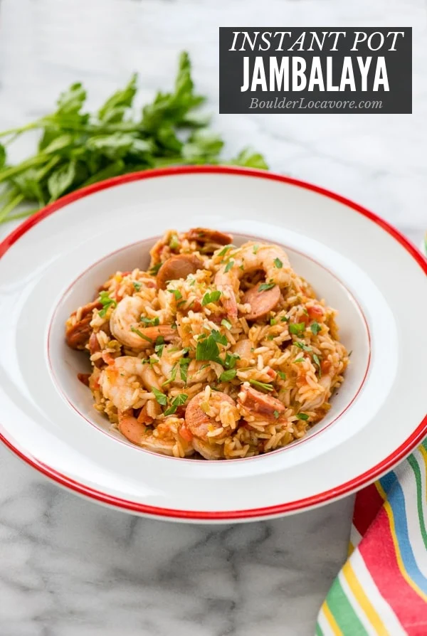

Jambalaya

Description
Jambalaya is a cajun recipe originating in Louisiana made with rice, celery, peppers and onion; with chicken and smoked or spicy sausage like Andouille. Shrimp is often added too. This Instant Pot Jambalaya recipe does not include chicken but with a few little tricks is perfection with spicy sausage and shrimp!
Ingredients
- 2 tablespoons Olive Oil
- 12 ounces Andouille Sausage cut into ¼-inch-thick slices
- 1 medium Onion chopped
- 1 medium Green Bell Pepper seeded and chopped
- 1 medium stalk Celery chopped
- 3 Garlic Cloves diced
- 2 teaspoons Cajun Seasoning
- 1/4 teaspoon ground Thyme
- 1 cup Long-Grain White Rice. Regular NOTinstant rice
- 1 14.5-ounce can Diced Tomatoes undrained
- 1 1/2 cups Low-Sodium Chicken Stock
- 1/2 teaspoon Kosher Salt
- 12 ounces medium-size Cooked Shrimp (41-60 count)
- 4 Scallions thinly sliced
Steps
- Heat the olive oil in the inner pot at on Sauté. Add the sausage slices, and cook until browned, about 2 minutes per side. Transfer the meat to a paper towel–lined plate to drain.
- Add the onion, bell pepper, celery, and garlic and cook, stirring occasionally, until the onion is translucent, about 3 minutes.
- Add the Cajun seasoning, thyme, and rice, and stir until the rice is well coated in the oil. Press Cancel to stop the cooking.
- Add the tomatoes and their juices, the stock, and salt. Stir with a spatula freeing any food particles sticking to the bottom of the Instant Pot insert.
- Lock the lid. Cook on Manual High Pressure for 8 minutes, then allow a Natural Pressure Release for 5 minutes followed by manual release of the remaining pressure.
- Stir the rice mixture, then stir in the shrimp, scallions, and reserved sausage. Replace the Instant Pot lid and allow the ingredients to heat through for 5 minutes in the residual heat.